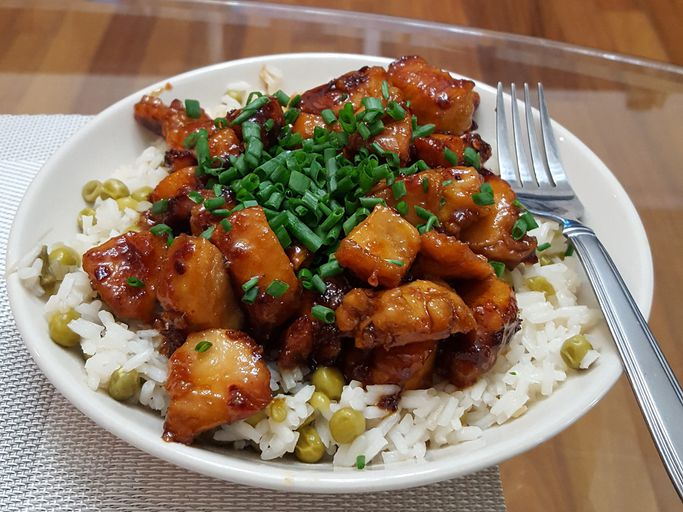

Honey Glazed Chicken
Home

This honey chicken dish is easy to make with just 5 ingredients.
I've used this recipe for years, and my family requests it often.
Delicious served on steamed rice and garnished with sliced green onions.
Ingredients
- 1/4 cup of honey
- 2 tablespoons soy sauce
- 1/8 teaspoon of red paper flakes
- 1 1/2 tablespoons of olive oil
- 2 skinless, bonless chicken breast halves, cut into bite size pieces
Steps
- Gather all ingredients.
- Whisk honey, soy sauce, and red pepper flakes in a bowl; set aside.
- Heat olive oil in a skillet over medium heat; cook and stir chicken in hot oil until lightly brown, about 5 minutes.
- Pour honey mixture into the skillet; continue to cook and stir until chicken is no longer pink in the center
and sauce is thickened, about 5 minutes more.
- Serve hot and enjoy!